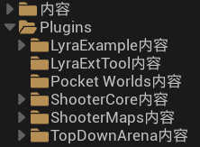

使用 Gamefeatuer 功能对项目资源管理的层级设计
相对于一般项目, 使用
Gamefeatuer功能进行开发时
内容管理逻辑会有一定改变
在一般项目里, 主目录下的 /Content 文件夹作为项目内容的核心
资产内容基本都处于这个位置
而使用 Lyra框架 时, 主目录下的 /Content 文件夹作为 Lyra框架 核心
框架资产都处于这个位置
任何修改都会影响整个框架的执行
为了框架设计的纯净和模块解耦性
于是他们将一般项目中的资产存放挪至了 Gamefeatuer 作为插件内容来管理
所以你需要在 内容浏览器 的 设置 里勾上 显示插件内容
初始化 Lyra项目 后, 主要内容的结构是这样的:

- 内容Content
Lyra 基础框架, 主要提供了底层基类和开发工具类
比如 UI系统/输入控制/角色和动画/本地化/场景构建工具 等等Shooter和TopDownArena内容的基本依赖- 不建议直接修改这里的东西
- 插件Plugins/
- 其他
目前没有什么用
- GameFeatures/
示例项目
- ShooterCore
实现了一个射击游戏的基础机制
比如 AI系统/歼灭占点机制/技能/物品行为Shooter主要核心资源ShooterMaps内容的基本依赖
- ShooterMaps
Shooter关卡资源地编/关卡设计师和CG动画摄影师通常在这里工作
Shooter项目的关卡资源
- TopDownArena 俯视角炸弹人关卡资源和内容
目前比较凑数, 用处不大
- ShooterCore
- 其他
照着这个设计逻辑, Lyra框架 用起来还是比较明了的:
- 修改
ShooterMaps- 使用既有资源搭建新的关卡
最简单的使用方式
- 使用既有资源搭建新的关卡
- 修改
ShooterCore- 改造
Shooter游戏特性增添或修改功能
- 改造
- 修改
Lyra- 改造框架
更典型的使用 Lyra框架 开发场景中, 是新建一个自定义层:
站内文章: 新建项目层级